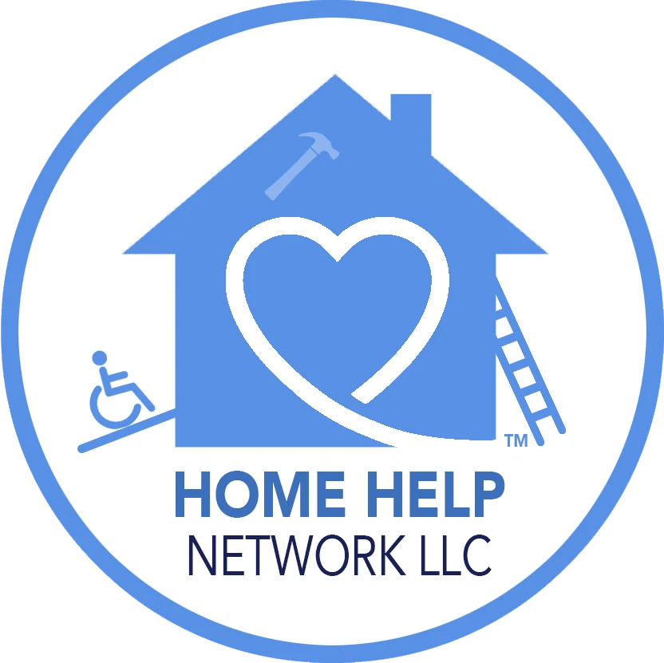
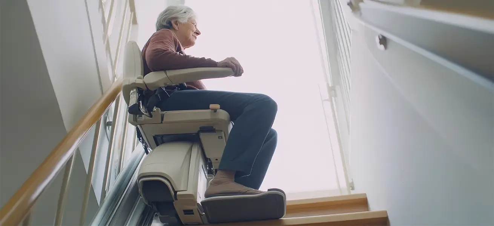
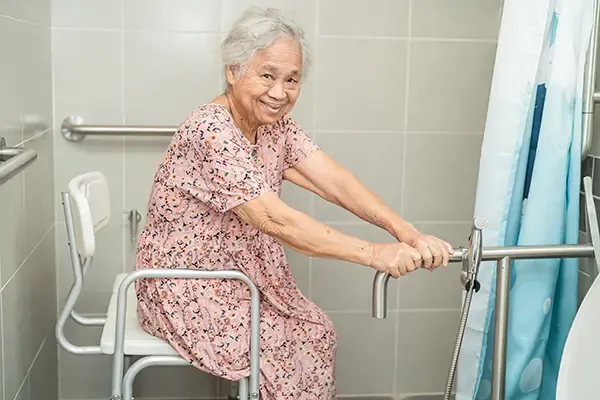
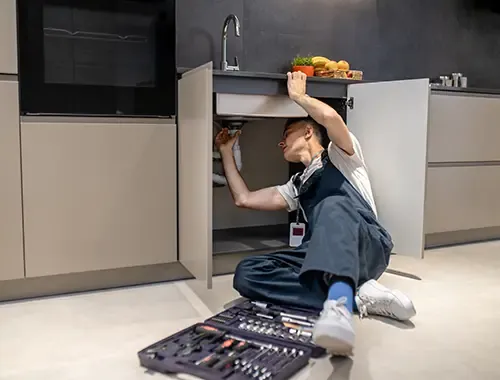
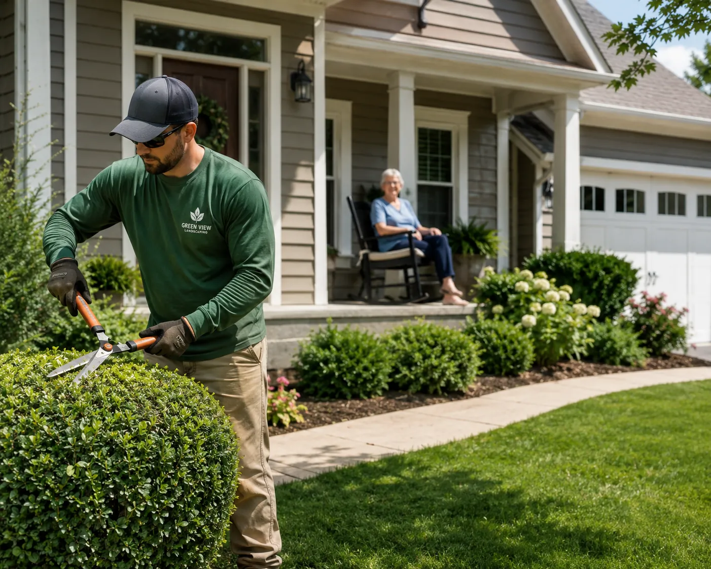
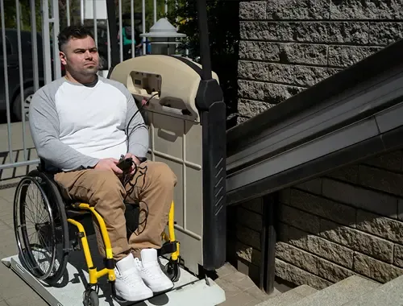
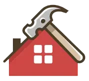
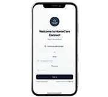

Home / Home Help
You take care of your health. We’ll take care of your home.
Through our partnership with Home Help Network™, North Texas seniors and families can get trusted help with home repairs, mobility and accessibility upgrades, and safety modifications — so your loved one can stay safe and independent at home.

In partnership with Home Help Network™

From small repairs to full renovations.
Home Help Network™ bridges the gap between home health care and home maintenance, helping aging adults, individuals with disabilities, and post-hospital patients remain safe and independent in the homes they love.
- Minor repairs & maintenance — the everyday fixes that keep a home safe and comfortable.
- Mobility & accessibility upgrades — ramps, stair lifts, grab bars, and bathroom modifications.
- Post-hospital home preparation — getting a home ready before a loved one returns.
- Home safety assessments — a room-by-room look at what would make the home safer.



From simple chores like trimming bushes, fixing a clogged sink, or painting a room, to critical mobility renovations such as wheelchair ramps, stair lifts, grab bars, or bathroom modifications, their trusted network of professionals is just one call away.
Why families choose Home Help Network.
Safety & independence
Expert technicians make the home safer with mobility upgrades and accessibility modifications tailored to your needs.

Comprehensive home support
Everything from small maintenance tasks to full home renovations — so you never have to worry about who to call.
Coordinated care partnerships
They work hand-in-hand with home care agencies, discharge nurses, physical therapists, and case managers so each client returns to a home that supports recovery and independence.

Innovative home help app
An easy-to-use mobile app walks you through a personalized checklist to assess safety and comfort needs — so help is fast and customized.
Need help at home?
Call Home Help Network™ today, or use their app to request your free “Aging-at-Home Safety Assessment.”